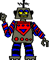

Who is this Adam?
Adam is a man with the various spectrum of traits you have come to expect from those you encounter.
Adam is neither here nor there. He is constantly on the move, ready to seize any opportunity that heads his way.
This page aims to be the number one source of all Adam-related things.
For example, look at this photo of Adam:
As you can see, Adam is partaking in an activity he hates: Surfing. However, for reasons soon to be explained, it is means to an end for Adam. It is important to recognize that Adam will endure harsh circumstances in order to fulfill his ambitions.
BIG NEWS! The Goth Page has been created.
FAQs in the Adam community:
Answered by the man himself at a grocery store that shall remain unnamed.
What animal would you be?
"When I was a kid, I did actually really like sharks. Probably a shark."
Opinion on robots?
"Uhh... They're taking our jobs, so I don't like them."
Thoughts on Western consumerism?
"I don't think it's as bad as everyone says it is, you know? Um, I feel like in a lot of other parts of the world, there are people mass producing. Especially like the Asian countries. We have a problem with consumerism there. You know, maybe, actually... My whole opinion is it's just not as bad as what people say it is, you know?"
Are you an optimist?
"Uh, definitely, yeah."

Opinion on the WWW?
"Um, I think there's a certain point, you know, AI has gotten to into that made its way into like Google and stuff like that, you know. I think the uh it's very important to have the worldwide web, especially in the world like today, you know, but um uh, the way it's advancing, uh especially using AI might be a little concerning for like, uh, uh some some like, uh information producers or like, uh, people, I don't know, you know, no, I don't know. I... It's good."

Words of wisdom!!!
ADAM'S FINANCIAL ADVICE:
"Put all your money into crypto but save 10% for life expenses just to barely get by. I've made probably close to $200 from crypto."

ADAM'S RELATIONSHIP ADVICE:
"Just talk and yep, you, yep, yep. A lot. And you do what you need to do. And you get that done. That's how you do it right there. If you can't speak, write letters."

An interview with [REDACTED] at [REDACTED]:
What's your history w/ Adam?
"Uh, we go pretty far back. We actually used to cut down trees around Big Boga, 'cause, you know, we had a home there. But after the falling out, we didn'y really talk for, like, a couple thousand years. But then we became friends again (in 32 B.C.) after finding a hippopotamus or something. And we killed it together."

What are your thoughts on the Adam Bigfoot allegations?
"Uh, those are completely true. He was Bigfoot. He was actually the guy. No suit. He's not changed; he just shaves all his hair now. He looks vaguely human now."
Thank you for Adaming
Warm regards from the Adam community